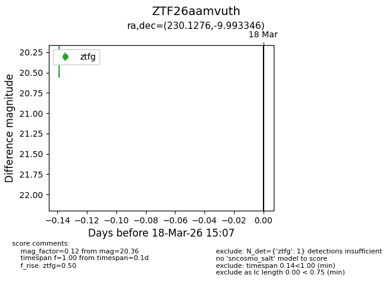
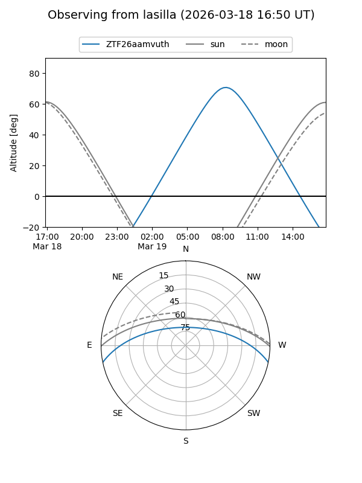
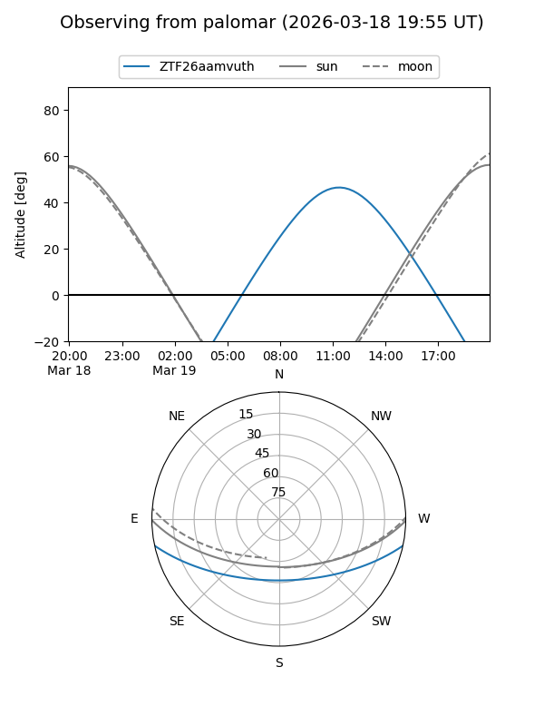

ZTF26aamvuth
Target ZTF26aamvuth at 2026-03-18 15:10
Aliases and brokers:
FINK: link
Lasair: link
ALeRCE: link
alt names
ZTF26aamvuth (ztf,fink_ztf)
Coordinates:
equatorial (ra, dec) = 230.1276,-9.99335
equatorial (HMS+DMS) = 15:20:30.63,-09:59:36.05
galactic (l, b) = (352.2947,+38.19846)
Flags:
Photometry:
last ztfg=20.36
1 ztfg detections
Lightcurve

Visibility


Additional plots